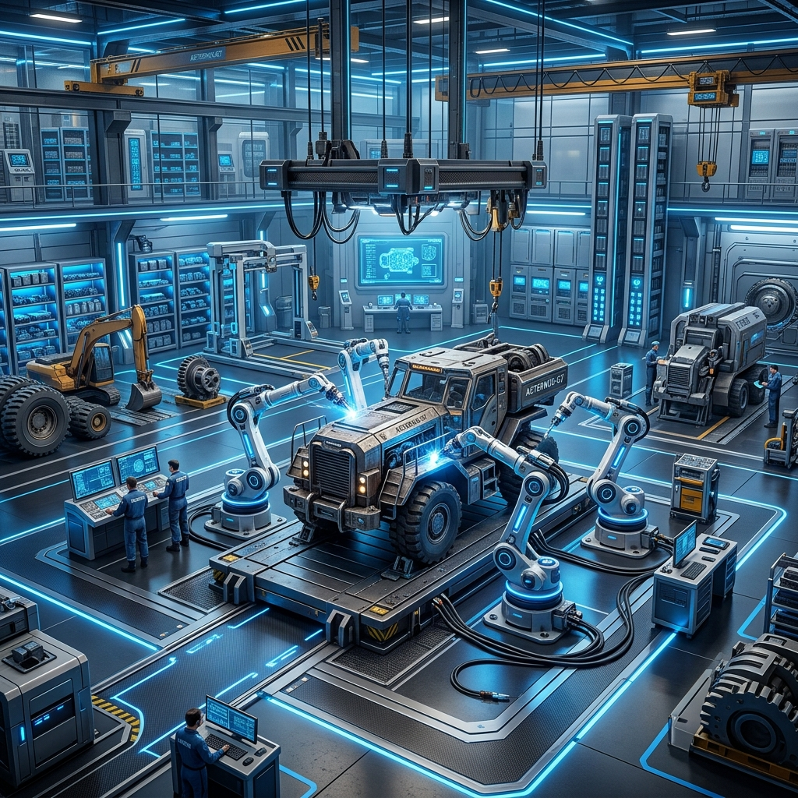
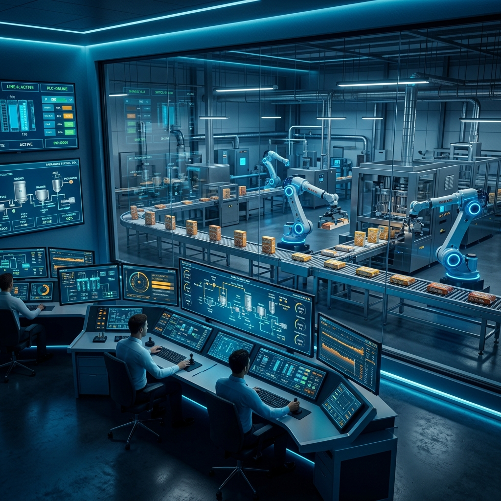
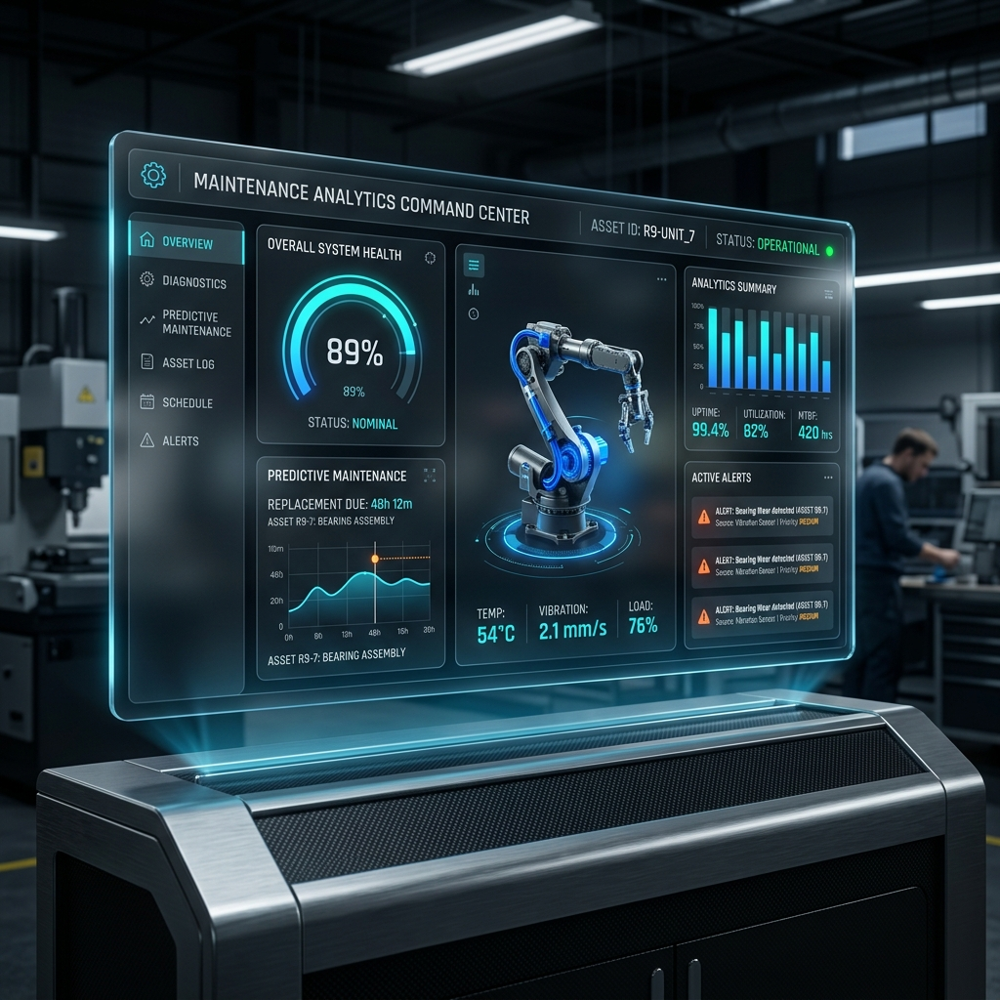
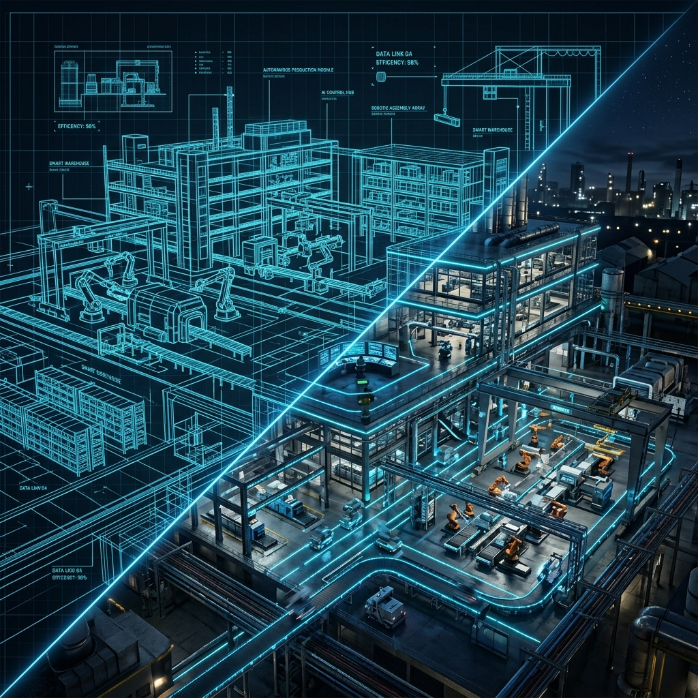
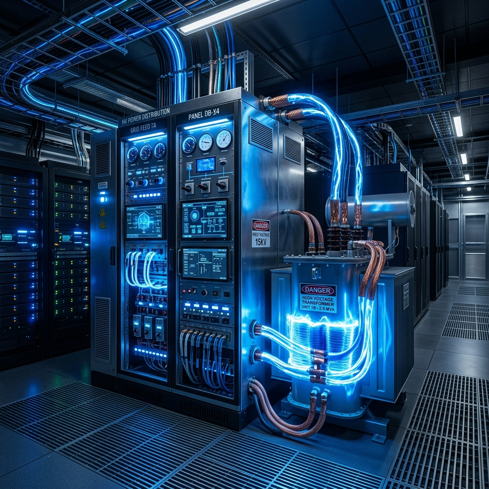

قيادة التوسع وإنشاء أكثر من 50 فرعاً لـ 5 علامات تجارية ضخمة (بلبن، وهمي برجر، عم شلتوت، بهيج، كنافة وبسبوسة).

تأسيس ورشة صيانة ومخزن معدات مركزي لرفع كفاءة الأصول التشغيلية.

قيادة التحول الرقمي والآلي لخطوط إنتاج مصانع العبد للأغذية.

تصميم وبناء نظام إدارة صيانة محوسب (CMMS) مخصص من الصفر ليغطي كافة الفروع والمصانع على مستوى الجمهورية.

تسليم مشاريع مصانع خضراء (Greenfield) بالكامل وإعادة هيكلة المرافق الحرجة.

إدارة شبكات توزيع الطاقة المركزية والمرافق الكهروميكانيكية للمصانع الضخمة.